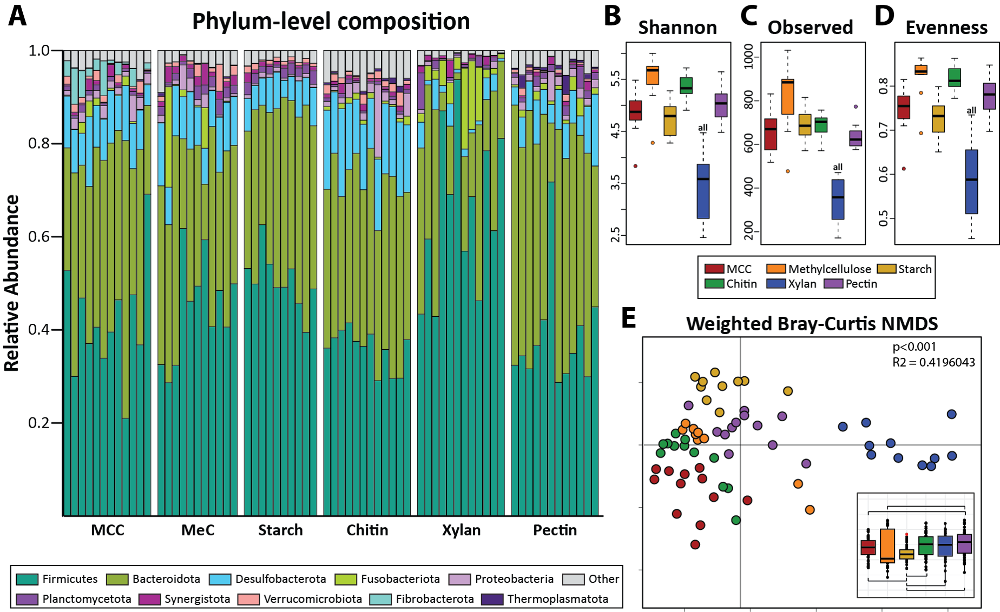
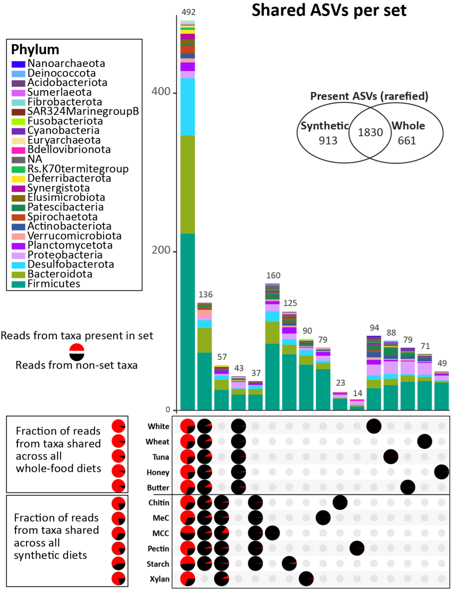
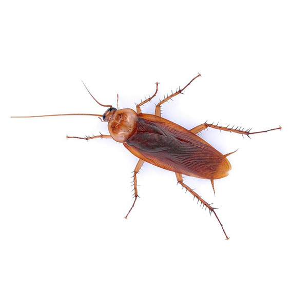

Research has identified some gut microbes with tenuous associations
to health or pathology, but ultimately, the complex nature of our gut
microbiome introduces a plethora of factors that may be out of our
control. That is not to say we have NO control! The gut microbiome
exists within the host organism, putting the host in control of what
gets in, who is allowed to stay, and what constraints the microbial
community must operate under.
I have created synthetic diets that allow us to control more
precisely what enters the gut system and test how different nutrients
lead to microbial shifts. My first experiment used different
carbohydrate sources and found that, while general “high fiber” diets
that are poorly defined had few differences in previous experiments, the
exact fiber matters!

Subsequent experiments using these diets continue to show that the
hemicellulose Xylan substantially alters the gut community.
Additionally, it appears that the use of synthetic diets in general
allows for the gut community to be more sensitive to diet shifts than
whole-food diets which have unpredictable and unbalanced nutrient
contents.

Perhaps the host itself is maintaining gut stability during nutrient
stress to keep a wide array of metabolic capabilities depending on what
the cockroach encounters. So, I decided to investigate another method of
controlling the microbiome: the immune system.
Unlike mammals, insects do not have an adaptive immune system. They
rely on their innate immune system which is hardcoded into their genes.
Pathogens are recognized by their conserved motifs by proteins such as
Peptidoglycan Recognition Proteins, or PGRPs. This recognition can also
be used to protect certain microbes that are beneficial to the host.
What I find especially fascinating is that members of the same microbial
genus but belonging to different host gut communities (ex. mouse to
cockroach or termite to cockroach) will fail to colonize the non-native
host, indicating evolutionarily conserved immune recognition beyond just
recognizing general motifs.
I am using RNA Interference (RNAi) to turn off the immune
pathways in germ-free cockroaches to see if we can force a non-native
community to assemble in the gut. Additionally, this technique may
identify other host factors that are maintaining a starvation-like
phenotype during whole-food diet treatments and can help us understand
how the host contributes to stability.
This project is still in the early stages, with tons of potential to
grow in many directions!
